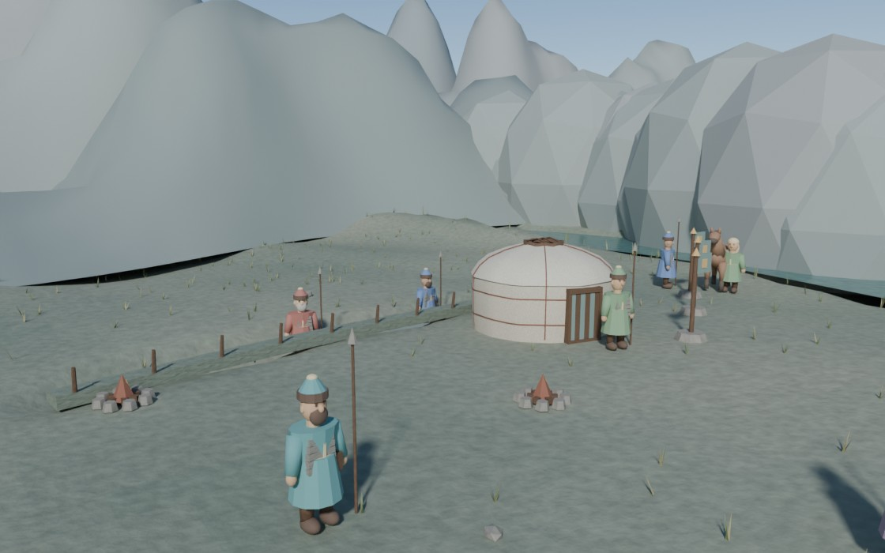

1643XVII ҒАСЫР
Тар шатқалдағы хабар
Шатқалды барлап, Жәңгір ханға хабар жеткіз. Шайқаста атты жасақты көздеп, мылтықты оқта және ор бойындағы үш шепті қорға.
Шатқалды барлап, Жәңгір ханға хабар жеткіз. Шайқаста атты жасақты көздеп, мылтықты оқта және ор бойындағы үш шепті қорға.
Үш тактика · үш шабуыл бағыты · қатарынан дәл ату · жасақ көмегі · жылдам оқтау. P — үзіліс, B — жақын нысана. Әр шептің қосымша мақсатын орындап, +200 ұпай ал. Шептер арасында қорытынды мен дайындық үзілісі бар.

3D КӨРІНІСЖер бедері, бекініс және әскери көмектің қорғанысқа ықпалын түсіндір.
Жәңгір хан бастаған жасақ жоңғар әскерінің ілгерілеуіне қарсы қорғаныс ұйымдастырды.
Тар жер мен қазылған ор қорғанушыларға қолайлы жағдай жасады. Жолдың ені шабуылдаушы топтың кең жайылуын қиындатты.
Жәңгірге Самарқан билеушісі Жалаңтөс баһадүрдің көмегі келгені тарихи еңбектерде айтылады.
Орбұлақ шайқасы туралы тарихи материал ↗ · Деректерді талдаған зерттеу ↗
Шатқалды барлап, Жәңгір ханға хабар жеткіз. Шайқаста атты жасақты көздеп, мылтықты оқта және ор бойындағы үш шепті қорға.
Төрт тапсырма арқылы оқиға мен оның тарихи мағынасын түсінгеніңді тексер.
Ор мен тар шатқал қорғанысқа қалай көмектесті? Ойыншының таңдауы мен тарихи деректің бір мысалын ата.
Жазба осы браузерде сақталады.